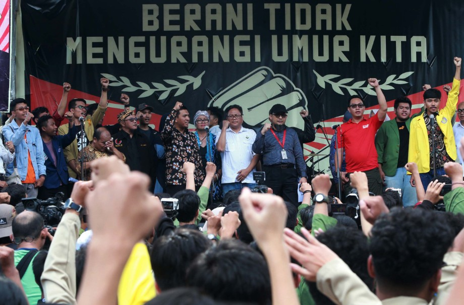
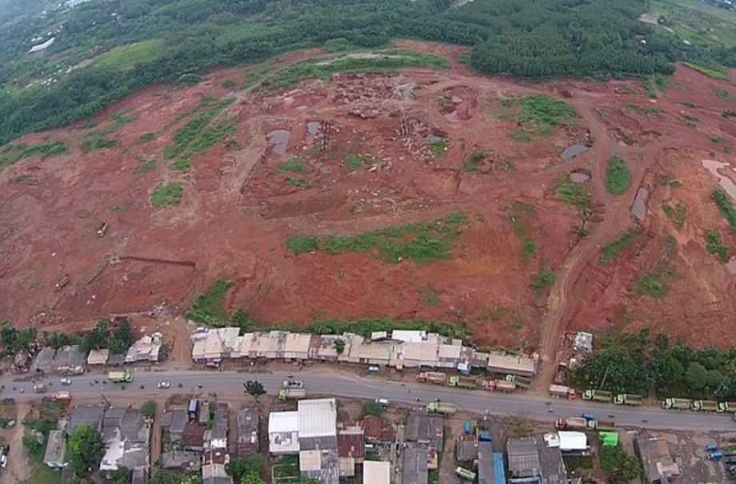
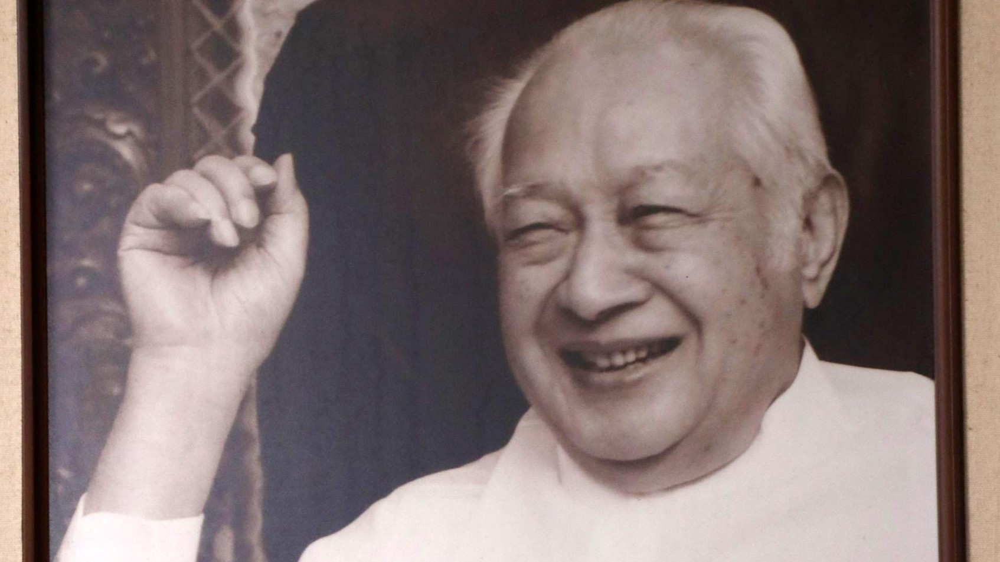
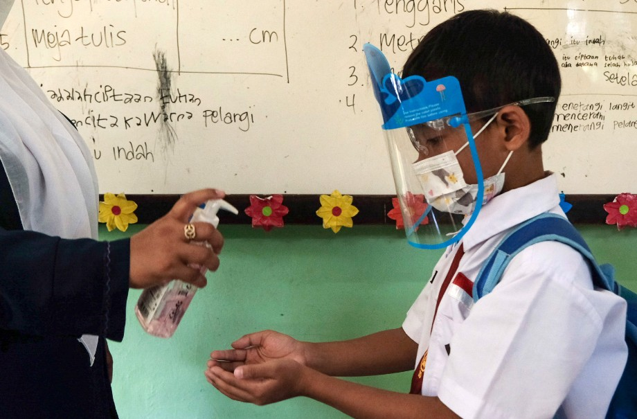
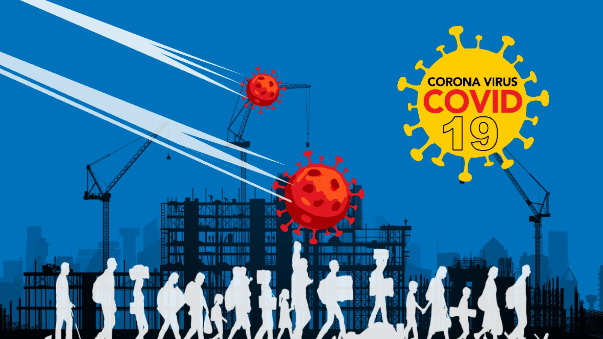

Januari


Matinya Perlawanan di KPK
25 Januari 2022
Sebanyak 76 pegawai yang terkena rotasi secara sepihak seolah “mati kutu”. Dengan status sebagai ASN dan tanpa Wadah Pegawai KPK, mereka mustahil melakukan perlawanan.


Kisah Beleid Pindah Ibu Kota yang Berbau KKN
25 Januari 2022
Jonggol sempat mencuat bakal calon ibu kota negara di era Presiden Soeharto tahun 1997 dengan membangun kota mandiri. Tapi aturannya dicabut karena dianggap sarat KKN.


Memutus Mata Rantai Transmisi Lokal Omicron
25 Januari 2022
Berbagai strategi mitigasi dilakukan untuk membendung penularan COVID-19 varian Omicron. Pelajaran tatap muka siswa dihentikan dan dilakukan micro-lockdown.